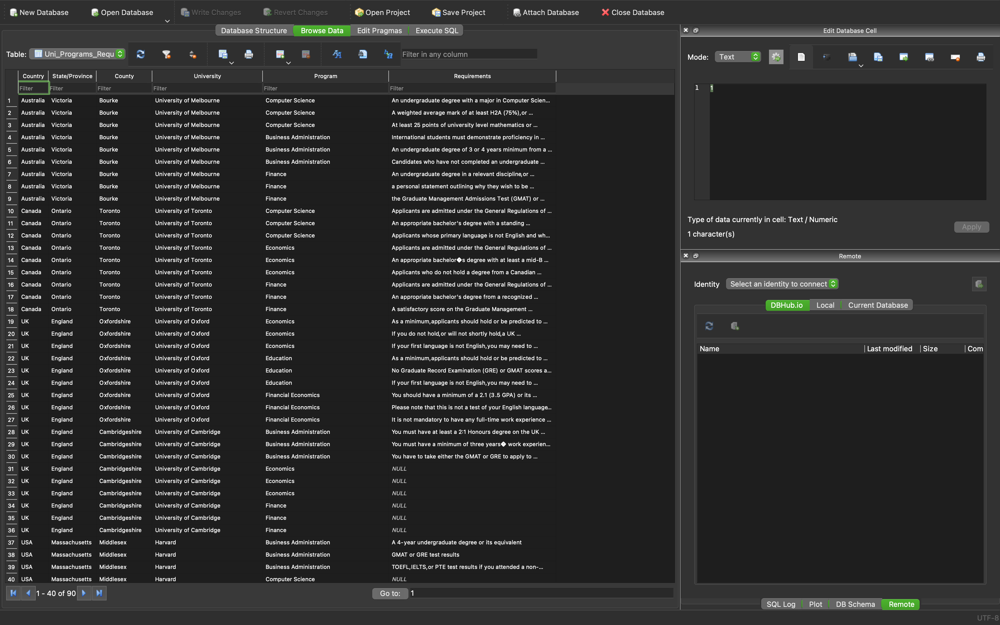

Country answer: Try to type: Korea, United States, United Kingdom, Russia, Ukraine, Japan, China  # nodejs This is my personal project. I actually started this project as an AGILE group project from my college course but the project was not done by the end of the due date. I think that is because everyone else and I did not have enough knowledge about back-end side and front-end side. What I had learnt so far from my college was all about programming and problem solving, algorithms, data structures, mathematics or something like those. We did not know about what the server does and their connections between APIs, server and server communications, server and front communications. The main core idea of this project was, I had to send data from front-end side to server-side using jquery ajax. Once the server receives the string data, it runs a python script and gives the string data as an argument. Then the python script starts to find the result which the word starts exactly same with the string value which comes from the web browser. Once it is done finding the matching value from the database, it returns the result. Finally, the server send the result to the front-end. I decided to start this project again because this is going to be a good opportunity to study about back-end. We actaully decided to use python flask framework as our server framework but I decided to use Node JS express framework because as a beginner, Node JS could be a proper way to start learning about server environment. My goal for this project is, when a user type something into a search box, each time oninput method sends JSON data which represents the string value that comes from inside of the search box, to the Node JS server. Back to college project, we did not use JSON, we used text as a type of data and we did not use Node JS as a server framework. but now I decided to use JSON because I believe this way would have more compatibility and is helpful as a learning process. The first thing that I faced with the problem was, the web browser did not send ajax data into server side. But the problem was solved kind of easily because I did not include jquery script in the html file. The second problem was, I did not sure if my server receives http request properly. This is done by using the variable such as 'req.query.country'. Next problem was, running python script from Node JS. I found the way to do it using pythonshell but I still have a problem with returning the result part. I found the way to send the result which comes from python script, to the ajax success function. I used res.status(200).send() method to send the result to the ajax success function. Once the sending process is done, ajax success function now can handle the rest of the part by using res.country variable from the front-end. By doing this, I have learnt CRUD operation rest API. Then I realized that I was using verbs in my url which means I was not following CRUD. I modified my entire source code again and eventually I am now following CRUD properly. All the problems were done now. Techniqual explanation: Once a user type something into a searchbox, oninput method calls corresponding function which performs jquery ajax. Then ajax sends get method which contains string data, to /result/country/:country inside of Node JS express server. Once the sending is done, server receives the get method and starts to call python script with 'option' object that contains req.query.country variable. When the python script is run, the 'option' object is plugged in as a parameter. The python script run the main function and req.query.country variable from Node JS is passed as a variable called 'sys.argv[1]' in python script. The variable is again passed a variable named 'arg'. The python script starts to read database and the 'arg' variable starts to compare itself with each country name's first len(arg) letters. If they match, it stores the value and repeat until all 'country's from database are checked. Once this process is done, finally print out the result. When the python script print out the result, the server recevies them and uses them as a return value. Now the server can send this data to ajax success function using by the fowlloing method 'res.status(200).send(results[0]);'. Success function from ajax can handle the rest of the part. The variable is 'res.country' because in the url 'http://localhost:8080/result/country/:country', last part :country means it is a variable that comes from server. By doing following steps, I was able to complete this project.